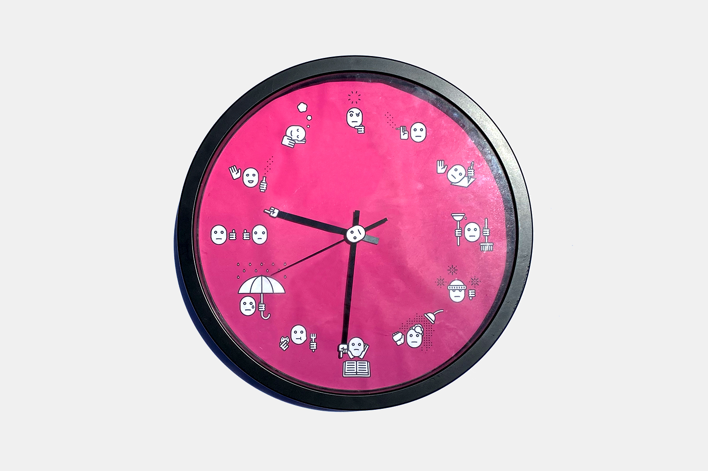

College O'Clock
I was given a prompt to create a system of logograms and organize them into a form that best fit my chosen subject matter. I wanted to create a piece about time, so I began noting how I spent mine throughout the week. After collecting data, I started designing the logograms.

I represented daily tasks that anybody can relate to: eating, showering, cleaning, walking in the rain, walking in the snow, and sleeping. In addition, I represented daily tasks that college students could relate to: reading, thinking, and taking notes.
Each icon needed to be immediately recognizable, and the majority of my time on this project was spent making sure each one was. The other challenge was to make these characters have a feeling of life, so that the audience could relate to them.
Progress for shower icon
I was satisfied with my work after finishing all of the icons, but felt that the piece needed an extra push to be successful. My idea was to put the icons around a clock and have the hands spin endlessly instead of telling the time. The piece, then, became a design object rather than a functional object. I made this choice because it highlighted the subject, and elevated it to another level. In the end, the piece was a statement about the daily lives and cycles of college students, and the form communicated this poetically and effectively.